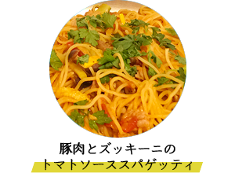
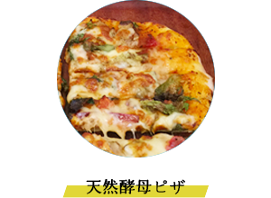
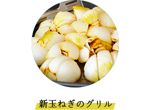
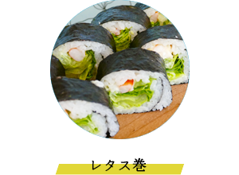
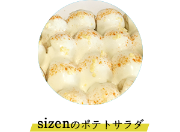
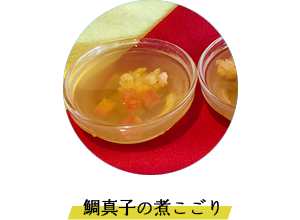

メニュー
科学調味料・添加物は使用しない
有機・無農薬の食材が中心のオーガニック料理

豚肉の甘さと、ズッキーニのさっぱりとした食感が絶妙なバランスをとっています。

天然酵母の手ごね生地と特製ピザソースで作りました。

新玉ねぎをじっくりと焼くことで、あまさが際立つおいしさです。

宮崎市跡江の松本さんのオーガニック米です。

手づくりマヨネーズでとってもおいしいです。

真鯛の身をじっくりと煮込むことで、ふんわりとした食感が特徴です。